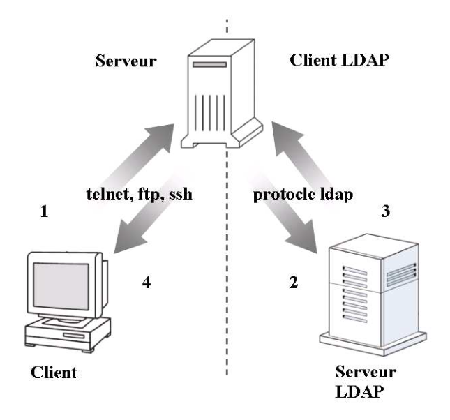
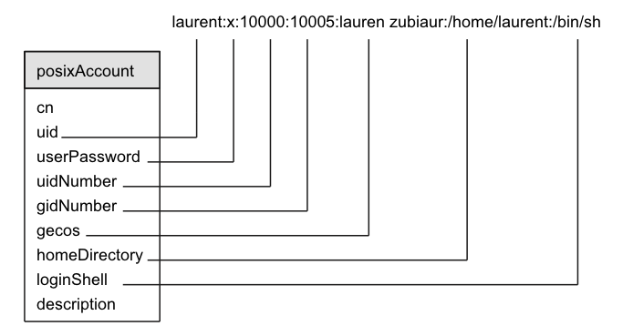

Avant d’accéder aux ressources d’une machine, un utilisateur doit s’authentifier au- près du système. Pour cela, l’utilisateur fournit au service contacté (serveur telnet, ftp. . .) un identifiant et un mot de passe. C’est la vérification du couple identifiant/mot de passe qui permet au système d’authentifier ou non l’utilisateur. Sous UNIX, les informations concernant les comptes utilisateur sont enregistrées dans le fichier /etc/passwd. Chaque ligne de ce fichier contient des données sur un utilisateur dont un nom (username), un mot de passe (password), un numéro (uid) et un groupe (gid). C’est au moyen de ces comptes que le système détermine quel utilisateur peut accéder à la machine.
L’authentification système via LDAP permet aux applications de déléguer l’authen- tification de leurs utilisateurs à un serveur LDAP. En d’autres termes, les utilisateurs ne seront plus authentifiés par la machine sur laquelle ils désirent se connecter mais au moyen d’un serveur LDAP. Pour cela, les informations des comptes utilisateurs ne sont plus enregistrées dans la base de données locale (fichier /etc/passwd) mais dans l’annuaire LDAP. La figure 3.1 reprend les différentes étapes d’une authentification via LDAP.

Fig. 3.1 – Authentification système via LDAP
Les informations sur les comptes utilisateur contenues dans l’annuaire LDAP peuvent être mises à la disposition de plusieurs machines permettant ainsi de centraliser les comptes utilisateur de différents systèmes. La centralisation des comptes utilisateur dans un annuaire LDAP permet :
Une administration des comptes plus aisée : L’administration des utilisateurs se fait en un point et non plus sur chaque hôte.
L’utilisation d’un seul mot de passe : L’utilisateur n’a plus besoin de retenir un mot de passe pour chaque système sur lequel il possède un compte.
La synchronisation des comptes : Les informations d’un utilisateur étant uniques, la modification de ces données est valable pour tous les systèmes. Ainsi, le changement du mot de passe d’un utilisateur sur un système est répercuté sur tous les autres.
L’accélération de l’intégration des utilisateurs : La création d’un nouveau compte utilisateur sur plusieurs systèmes se résume à l’ajout d’une nouvelle entrée dans l’annuaire.
Sous un système d’exploitation de type UNIX, les informations concernant les utilisateurs sont enregistrées dans les fichiers passwd, shadow et group dans le répertoire etc. Le schéma nis.schema (RFC 2307) définit les attributs et les classes d’objets néces- saires à la représentation d’un compte utilisateur conforme à la norme POSIX (Portable Operating System Interface) dans un annuaire LDAP. Ces classes sont posixAccount, shadowAccount et posixGroup.
La figure 3.2 montre la correspondance entre une entrée du fichier /etc/passwd et les attributs de la classe posixAccount.

Fig. 3.2 – Correspondance entre la classe posixAccount et le fichier passwd
Les principaux attributs de la classe posixAccount sont décris ci-dessous.
uid
Cet attribut représente le nom de l’utilisateur (username). A ne pas confondre avec le champ UID du fichier /etc/passwd.
userPassword
L’attribut userPassword contient le mot de passe associé à l’attribut uid. C’est la comparaison de cette valeur avec le mot de passe fournit par l’utilisateur qui permet d’authentifier ou non un utilisateur.
uidNumber
L’attribut uidNumber représente le champ uid (user identifier) du fichier /etc/passwd. Le uid est un numéro unique associé au nom de l’utilisateur. Il est utilisé par le système pour gérer plus facilement les permissions et les processus.
gidNumber
L’attribut gidNumber représente le numéro d’identification du groupe (gid) auquel l’utilisateur appartient. Les différents groupes nécessaires peuvent être enregistrés dans l’annuaire au moyen de la classe posixGroup.
homeDirectory
L’attribut homeDirectory contient le chemin (path) du répertoire personnel de l’utilisateur.
loginShell
L’attribut loginShell indique l’interpréteur de commande (shell) à lancer quand l’utilisateur se connecte.
gecos
L’attribut gecos contient des informations complémentaires sur l’utilisateur (par exemple son véritable nom).
Avant de pouvoir créer des utilisateurs LDAP dans l’annuaire, il faut inclure les schémas nis.schema et cosine.schema (requis par nis.schema) dans le fichier slapd.conf. Ces fichiers sont fournit avec le logiciel OpenLDAP.
include /usr/internet/openldap/etc/schema/cosine.schema
include /usr/internet/openldap/etc/schema/nis.schema